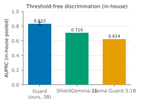
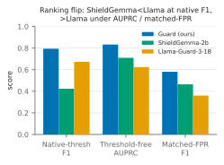
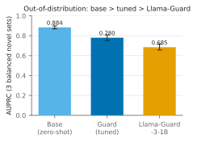
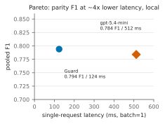
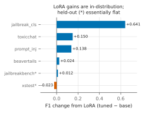

The Benchmark Chooses the Winner: A Fair Evaluation of Small-LLM Safety Guards
Safety guards are usually compared at each model’s native decision threshold, which makes the reported winner partly a property of the operating point and the benchmark rather than of the model itself. This paper is a broad, measurement-focused study of that fragility for small language models (SLMs) used as guards — attractive because a 1–8B model runs on-premises at batch=1 latency and low cost — under an operating-point-fair protocol: threshold-free AUPRC/AUROC, matched-FPR comparisons, and paired-bootstrap CIs with McNemar tests. We run the broad study on a general in-house suite and four novel out-of-distribution benchmarks (a SmolLM3-3B guard plus five other bases, against open guards and gpt-5.4-mini), then ground it in a concrete high-compliance use case — a mortgage-lending assistant, where a general safety guard is paired with a domain-specific compliance guard (fair-lending, non-compliant regulatory advice, security misuse) — via a hardened, trap-typed mortgage benchmark. All evaluations here classify input prompts; response/output moderation is the immediate next surface (§7.1).
Three findings matter. First, rankings flip under fair evaluation: two open guards reverse order between native-threshold F1 and threshold-free AUPRC (paired CIs exclude zero in both directions). Second, parameter-efficient fine-tuning improves in-distribution performance but weakens out-of-distribution ranking robustness: on three balanced novel benchmarks, the untuned base outranks the tuned guard in AUPRC (0.884 vs. 0.780, non-overlapping CIs) at essentially tied peak F1. Third, the same instability reappears when we change either the model family or the benchmark regime: identical tuning drives six bases toward a narrow out-of-distribution band, while on a hardened mortgage benchmark the in-domain fine-tune leads on point estimates (though not with a reliable margin over the base) — so the general and domain-specific layers of a compliance stack need not share a best guard. Under this protocol the guard remains competitive — it beats Llama-Guard-3-1B on the novel aggregate and shows no statistically significant F1 difference from gpt-5.4-mini on the in-house pool (gpt is not run on the novel sets) at lower batch=1 latency — but the main claim is methodological: guard comparisons must be scoped to the evaluation regime, because the benchmark and the operating point can choose different winners.
1 Introduction
Teams do not deploy abstract safety metrics; they deploy specific guards at specific operating points. Yet safety guards are still commonly compared at each model’s native threshold, or at thresholds tuned only for the proposed system. That makes the reported winner partly a property of the operating point rather than of the model itself. The problem is amplified by benchmark design: a benchmark dominated by obvious violations rewards a different behavior than one built from borderline, over-refusal-bait, or domain-specific trap prompts. If the operating point or the benchmark changes, the ranking can change with it. This paper is a broad, measurement-focused study of that fragility for small-model safety guards.
That fragility becomes practically load-bearing in a high-compliance setting, which is the concrete use case we build toward. Regulated environments — mortgage and consumer lending, healthcare, financial services — screen almost every user query and model response, and typically do so with a layered guard stack: a general safety guard (harmful content, jailbreaks, prompt injection) plus one or more domain-specific compliance guards that encode the rules of the domain — for a mortgage assistant, fair-lending violations, non-compliant or bad regulatory advice, and security misuse. Small language models (SLMs) fit both layers: a 1–8B guard runs on-premises at a batch=1 latency compatible with screening all traffic, at a fraction of a frontier API’s cost, and without sending regulated data off-site — properties that matter more in a compliance setting than a few points of leaderboard accuracy. The team’s real question is then which small model to use for each layer and how to tune it, and the general and domain-specific layers are two different regimes — exactly the situation in which a benchmark or operating point can choose a different winner. We therefore run the broad study on general benchmarks and then instantiate the domain-specific layer as a mortgage case study (§5.10).
Methodologically, we evaluate a small local guard — SmolLM3-3B
fine-tuned with LoRA into a one-forward-pass {safe, unsafe}
classifier — under an operating-point-fair protocol: threshold-free
AUPRC/AUROC, matched-FPR comparisons, paired-bootstrap uncertainty, and
leak-free in-distribution calibration. The broad study is measured on a
general in-house and novel-benchmark suite (§5.6, §5.3); the
domain-specific use case is measured on a hardened, trap-typed mortgage
benchmark carrying fair-lending, compliance, and security-misuse
categories (§5.10). Scope is deliberately
bounded: this paper measures the input-prompt layer —
every evaluation here, general and domain-specific, classifies input
prompts. Response/output moderation and agent tool-call surfaces are the
next layers a full query-and-response compliance stack
requires, and are out of scope here despite the broader project name
(§7.1).
The study yields three findings, developed in §5. First, native-threshold comparisons can be rank-inverting: two open guards reverse order between native-threshold F1 and threshold-free AUPRC. Second, parameter-efficient fine-tuning improves in-distribution performance but weakens out-of-distribution ranking robustness: on three balanced novel benchmarks, the untuned base outranks the tuned guard in AUPRC (0.884 vs. 0.780, non-overlapping CIs) at essentially tied peak F1. Third, the same instability reappears when we change either the model family or the benchmark regime: identical tuning drives six bases toward a narrow OOD band, and on a hardened mortgage benchmark the in-domain fine-tune is the point-estimate leader (§5.10).
Our emphasis is on how we measure, and we are careful with the word “held-out,” which we split into two distinct pools throughout the paper:
In-house held-out — two of our six in-house benchmarks (JailbreakBench, XSTest) are held out from training and calibration but drawn from the same overall pool.
Novel held-out (OOD) — four benchmarks the guard never trained on (WildGuardTest, WildJailbreak, OR-Bench-Hard, HarmBench); three are source-family held-out, while OR-Bench-Hard shares its
bench-llm/or-benchfamily with 1,000 training prompts (§3.9).
We evaluate on 6 in-house benchmarks (2,018 balanced, leakage-filtered test rows across guardrail, red-team, and over-refusal axes) and on 4 novel held-out benchmarks (2,020 balanced rows across three sets, plus 200 all-harmful HarmBench rows). We compare against gpt-5.4-mini, Llama-Guard-3-1B, ShieldGemma-2b, and a keyword matcher under one protocol. The headline comparisons are collected once in Table 1 and reported in full, with CIs where available, in §5; we do not restate them in prose. Under the fair protocol the guard remains competitive: it leads the measured open guards on in-house AUPRC, beats Llama-Guard-3-1B decisively on the novel aggregate, and shows no statistically significant F1 difference from gpt-5.4-mini on the in-house pool (gpt is not run on the novel sets) at lower batch=1 latency. But the load-bearing claim is not that one local guard wins everywhere. It is that guard rankings are fragile, and that claims about the “best” guard must be scoped to the evaluation regime that produced them.
| Metric (in-house pooled unless noted) | Guard | Llama-Guard-3-1B | ShieldGemma-2b | gpt-5.4-mini |
|---|---|---|---|---|
| AUPRC | 0.833 [0.813, 0.854] | 0.624 | 0.710 | — |
| AUPRC, novel held-out (3-set aggregate) | 0.780 [0.751, 0.809] | 0.685 [0.657, 0.715] | pending | — |
| Matched-FPR@0.10 F1 | 0.581 | 0.360 | 0.464 | — |
| F1 (paired vs guard) | no sig. diff. (F1 +0.011, ) | — | — | native point 0.784 |
| Latency, batch=1 p50 | 124 ms | not measured | not measured | ~512 ms (remote API) |
We are explicit about limits. Matched-FPR@0.10 is deliberately conservative, so AUPRC is our fair primary summary; at the deployed operating point (T=2.10, ) the guard still over-blocks benign prompts, which is a real deployment concern. ShieldGemma is run somewhat outside its designed content-policy regime and its novel-benchmark numbers are still pending; a single global threshold remains structurally in-distribution-optimized. The paper should therefore be read as a controlled measurement study about ranking fragility, not as a universal leaderboard claim.
1.1 Contributions
A fair evaluation claim. We show that guard rankings are unstable under native-threshold comparison, and that matched operating points plus threshold-free metrics materially change who appears strongest.
A high-compliance use-case claim. We ground the broad study in a concrete high-compliance setting by framing the guard as a layered stack — a general safety guard plus a domain-specific compliance guard — and evaluating a domain-specific mortgage guard (fair-lending, compliance, security-misuse categories) on a hardened, trap-typed benchmark. The general and domain-specific layers do not share a best guard, so the fragility above is not academic: it changes which guard a compliance team should pick per layer.
A generalization claim. We show that parameter-efficient tuning improves in-distribution performance but can degrade out-of-distribution ranking robustness: the untuned base can be the stronger OOD ranker, and the same pattern extends across multiple base families.
A practical implication claim. We show that the same fragility reappears when benchmark regime changes, and that a simple inference-time basetuned ensemble can recover much of the lost OOD robustness without retraining.
An objective claim. We show the OOD degradation is a property of the supervised objective rather than of fine-tuning per se: a KL-regularized objective (DPO, GRPO) resists the convergence, and once each objective is fairly tuned by per-objective hyperparameter search, DPO matches SFT in-distribution while dominating it out-of-distribution (§5.8).
3 Methodology
Figure 1 is the whole method at a glance — how the benchmark pool is split, the fine-tuning and calibration technique, and the frozen, operating-point-fair evaluation. It carries no result numbers (those live in the tables it points to); the rest of this section details each stage, and the hardware, software, and reproducibility setup is collected in §4.
3.1 Guard formulation: a single-token logprob head
The guard treats safety classification as a single next-token
prediction. A prompt to be screened is wrapped in a fixed instruction
template and the model is asked to emit a one-word verdict,
safe or unsafe. Rather than sampling text, we
read the logits at the final position and restrict attention to the two
verdict tokens. Let
and
be those logits; the guard score is a temperature-scaled two-way softmax
A single forward pass
yields the score (Figure 2)
— no autoregressive decoding, no multi-token or chain-of-thought
generation. This keeps inference cheap and makes the guard a proper
threshold-free scorer, so it can be summarized by AUPRC/AUROC in
addition to a hard verdict. A prompt is flagged unsafe when
for a fixed decision threshold
.
{safe, unsafe}
are turned into
by a temperature-scaled two-way softmax, and the prompt is flagged when
.3.2 Model selection: small language models
We use SmolLM3-3B (Bakouch et al. 2025) as the
primary guard base — small enough to fine-tune and serve on a single
consumer laptop and instruction-tuned, so it already carries much of the
safety-classification competence (§5.6). In our own tokenizer
inspection, safe/unsafe are single tokens,
which the one-forward-pass logprob head requires. The recipe is
deliberately base-agnostic; to check that our conclusions are not an
artifact of one model family, we apply the identical LoRA
recipe and guard calibration to five further bases spanning three
vendors and 1.5–8B — Qwen2.5-1.5B,
SmolLM2-1.7B,
DeepSeek-R1-Distill-Qwen-1.5B (reasoning-distilled),
Qwen3-4B, and Qwen3-8B — and report
the cross-family and scaling comparison in §5.7. The recipe transfers to any
base that tokenizes safe/unsafe as single
tokens.
3.3 Calibration
The temperature (temperature scaling (Guo et al. 2017)) and threshold are the only post-training free parameters, and both are fit exclusively on an in-distribution dev split drawn from the four in-distribution benchmarks (BeaverTails, ToxicChat, Prompt Injections, Jailbreak Classification). The two in-house held-out benchmarks (JailbreakBench, XSTest) and the four novel benchmarks contribute zero rows to calibration; this is a deliberate correction of an earlier pipeline in which held-out dev rows had leaked into temperature/threshold fitting. The clean, leak-free calibration yields the values in Table 2.
| Parameter | Value |
|---|---|
| Temperature | 2.10 |
| Decision threshold | 0.59 |
Because is tuned on in-distribution dev data, a single global threshold is structurally in-distribution-optimized; we treat this as a limitation and, for cross-model comparison, additionally report matched-FPR and threshold-free operating points rather than relying on the tuned point alone.
3.4 LoRA training recipe
We fine-tune SmolLM3-3B (Bakouch et al. 2025) with LoRA
adapters (Hu et al.
2021) and a completion-only objective: the loss is computed on
the completion only — the single verdict token plus the appended
end-of-sequence token — so the model is trained to place probability
mass on safe/unsafe at the decision position
rather than to reproduce the prompt. Adapters are applied to all seven
projection matrices (q, k, v, o, gate, up, down). Table 3
summarizes the recipe.
| Setting | Value |
|---|---|
| Base model | SmolLM3-3B (instruction-tuned) |
| Adapter | LoRA, rank , , dropout |
| Target modules | q, k, v, o, gate, up, down |
| Loss | Completion-only (verdict token EOS) |
| Trainable params | 60.5M (1.93% of 3.14B) |
| Precision | bf16 weights (MPS and CUDA) |
| Optimizer steps | 300 |
| Wall-clock | ~71 min |
| Seed | 42 |
Training ran entirely on a consumer Apple M4 Max laptop (36 GB unified memory, MPS backend, no CUDA), demonstrating that the recipe is reproducible at laptop scale. ToxicChat is used in the in-distribution train/dev/test splits of the models evaluated here (Table 4); because it is non-commercial, any distributed guard we release would be retrained with ToxicChat removed from training (it would remain eval-only for a shipped model).
3.5 Task and label mapping
The guard is a binary classifier that emits a single-token verdict,
safe or unsafe. We read the logits at the last
position, take a softmax over the {safe, unsafe} token
pair, and treat the resulting
as the decision score. A prompt is labeled unsafe if it
should be blocked (harmful content, successful jailbreak/injection,
policy-violating request) and safe otherwise; the
over-refusal axis contributes benign-but-superficially-risky prompts
whose core signal is unnecessary refusal, alongside contrast items that
preserve the binary safe/unsafe framing. All evaluations reduce to this
one score per row, obtained in a single forward pass.
3.6 Benchmarks and terminology
We use three explicitly distinguished pools, and we reserve the word “held-out” for two of them:
In-distribution (in-dist): BeaverTails, ToxicChat, Prompt Injections, Jailbreak Classification. Contribute dev rows to calibration plus balanced test rows.
In-house held-out: JailbreakBench, XSTest. Same in-house pool, but test-only — zero dev/calibration rows.
Novel held-out (OOD): WildGuardTest, WildJailbreak, OR-Bench-Hard, HarmBench. The guard never trained on any of them; three are source-family held-out and OR-Bench-Hard is a held-out configuration of a family also seen in training (§3.9).
All splits are near-balanced after filtering (Table 4). HarmBench is an all-harmful stress set (no negatives), so it is scored by mean rather than F1/AUPRC and is excluded from any aggregate AUPRC.
huggingface.co/datasets/source.
“Test n (uns:safe)” is the balanced test-split size and its unsafe:safe
composition (each class capped at 400). The four in-distribution and two
in-house-held-out sets form the 2,018-row in-house pool;
the three balanced novel sets total
rows (WildJailbreak is smaller because its balanced eval
split yields 210 per class after filtering; per-set AUPRC in Table 9); HarmBench is 200 all-unsafe
rows scored separately. OR-Bench-Hard is balanced by construction — its
benign over-refusal half is or-bench-hard-1k and its unsafe
half is imported from or-bench-toxic — so its “over-refusal
axis” AUPRC measures separating genuinely toxic prompts from
benign-but-refusal-baiting ones.| Benchmark | Source (Hugging Face) | Axis | Split role | Test n (uns:safe) |
|---|---|---|---|---|
| BeaverTails (Ji et al. 2023) | PKU-Alignment/BeaverTails |
guardrail | in-dist (train/dev/test) | 1,041 (513:528) |
| ToxicChat (Lin et al. 2023) | lmsys/toxic-chat |
guardrail | in-dist (train/dev/test) | 401 (199:202) |
| Prompt Injections | deepset/prompt-injections |
red-team | in-dist (train/dev/test) | 68 (32:36) |
| Jailbreak Classification | jackhhao/jailbreak-classification |
red-team | in-dist (train/dev/test) | 148 (73:75) |
| JailbreakBench (Chao et al. 2024) | JailbreakBench/JBB-Behaviors |
red-team | in-house held-out (test only) | 120 (58:62) |
| XSTest (Röttger et al. 2024) | natolambert/xstest-v2-copy |
over-refusal | in-house held-out (test only) | 240 (123:117) |
| WildGuardTest (Han et al. 2024) | allenai/wildguardmix |
guardrail | novel / OOD (test only) | 800 (400:400) |
| WildJailbreak (Jiang et al. 2024) | allenai/wildjailbreak |
red-team | novel / OOD (test only) | 420 (210:210) |
| OR-Bench-Hard (Cui et al. 2025) | bench-llm/or-bench |
over-refusal | novel / OOD (test only) | 800 (400:400) |
| HarmBench (Mazeika et al. 2024) | walledai/HarmBench |
red-team | novel / OOD (test only) | 200 (all unsafe) |
Selection. We pick established, publicly hosted sets that jointly cover the three safety axes — guardrail (harmful content), red-team (jailbreaks / prompt injection), and over-refusal (benign-but-superficially-risky) — and we represent each axis in both the in-house and the novel pool, so no axis is judged on a single source. XSTest is the over-refusal probe: in our filtered split it is near-balanced (123 unsafe / 117 safe; Table 4) rather than all-safe, but it still stresses benign-risky prompts and refusal behavior.
Train/dev/test separation (per benchmark). Only the four in-distribution sets contribute training and calibration data: each is split into a train portion (LoRA fine-tuning only), a dev portion (fitting and only), and a class-balanced test portion; the 1,102 in-distribution dev rows come exclusively from these four (JailbreakBench and XSTest contribute zero dev/train rows). The two in-house-held-out sets and the four novel sets are test-only: the guard never sees them in training or calibration. Novel sets are additionally held out at the source-family level (the whole dataset family is excluded from training) with near-duplicate filtering, so held-out evaluation measures transfer rather than memorization. All test splits are near-balanced — within 6% of parity after filtering (Table 4) — rather than exactly matched: Prompt Injections (32:36, 6% off parity) and JailbreakBench (58:62, 3%) are in fact slightly further from balance than the over-refusal probe XSTest (123:117, 2.5%). HarmBench is all-unsafe (no negatives). Figure 3 shows the split-and-evaluation flow.
3.7 Baselines
We compare against four systems, each run in its own native regime:
gpt-5.4-mini — a zero-shot classifier prompt read as a fixed binary decision rule (a prompted verdict, not a tunable threshold or a native classifier operating point). Our parser maps a valid
safe/unsafeverdict and abstains on API errors; a limitation is that the run used an unversioned alias without fixed decoding, so a reproducible rerun should pin a datedgpt-5.4-mini-YYYY-MM-DDsnapshot with deterministic settings (§5.11). We refer to this fixed prompted rule as gpt’s “native point” in the tables.Llama-Guard-3-1B (Meta AI 2024b) — the standard (non-INT4) checkpoint, run with its native chat template, reading the first-token verdict. (The INT4-quantized variant of this 1B model is described separately in (Fedorov et al. 2024); we do not use it.)
ShieldGemma-2b — its guideline prompt, scored by . ShieldGemma is a content-policy / general-guideline guard and is used somewhat outside its designed regime here; it is not an injection detector.
Keyword matcher — a simple substring/keyword baseline.
For a matched comparison we also evaluate an untuned base SmolLM3-3B: zero-shot, with the identical single-token logprob head and no training, on the identical 2,018 test rows as the tuned guard. To keep the comparison fair, the base receives its own clean calibration — a base-specific temperature and threshold (), fit on the identical in-distribution dev split with the identical NLL-plus-F1 protocol used for the tuned guard — so each model is read at its own best in-distribution operating point rather than a shared or borrowed threshold. To avoid resting the base-vs-tuned claim on an operating point, we additionally report the base’s threshold-free in-house AUPRC (§5.6).
3.8 Metrics and which comparisons carry CIs
We report F1 and false-positive rate (FPR) at the operating threshold, and the threshold-free summaries AUPRC and AUROC. Because only our guard receives a dev-tuned threshold while baselines are fixed operating points, we additionally compare all tunable systems at matched-FPR@0.10 (threshold chosen so FPR on the in-distribution dev split) and rely on AUPRC as the fair threshold-free summary. Uncertainty is reported by the bootstrap over the shared evaluation rows (2,000 resamples). We distinguish two uses precisely: a single-system interval (e.g., the guard’s pooled AUPRC) is an ordinary percentile bootstrap CI, whereas a paired-bootstrap CI is on the difference between two systems scored on the same rows (e.g., base tuned); we use “paired” only for the latter. These row bootstraps capture conditional sampling variation given fixed weights, not training-run or across-benchmark variance (§5.11). Pairwise agreement/disagreement between systems is tested with McNemar, which tests discordance in the binary predictions rather than equality of F1. Latency is measured at true batch=1 (p50/p90).
We are explicit about statistical support. Paired-bootstrap CIs are reported for the guard’s pooled and in-house-held-out AUPRC, the base and guard novel aggregates, the guard-vs-Llama novel aggregate, the base-vs-tuned and guard-vs-GPT deltas, the ensemble deltas, the mortgage case-study AUPRCs, and — computed on the identical 2,018 rows — the in-house-pooled AUPRC of ShieldGemma-2b and Llama-Guard-3-1B and the paired ShieldGemma-vs-Llama AUPRC and native-F1 deltas (Table 7, §5.2). Per-benchmark baseline AUPRCs and ShieldGemma’s novel-set numbers remain point estimates. We reserve the word “decisive” for comparisons whose system-level CIs do not overlap — which now include both the novel aggregate and the in-house pooled lead — and say “leads on point estimates” elsewhere.
We report several distinct F1 aggregations and define each to prevent conflation:
Pooled micro-F1 (0.794): computed over all 2,018 in-house test rows pooled.
Macro-F1, in-dist (0.860): unweighted mean of per-benchmark F1 over the four in-distribution benchmarks.
Macro-F1, in-house held-out (0.827): unweighted mean of per-benchmark F1 over JailbreakBench and XSTest.
Base-vs-tuned aggregate F1 (tuned 0.794, base 0.713): the base-vs-tuned decomposition (§5.6) uses these same 2,018 pooled rows, so the tuned aggregate equals the pooled micro-F1 above; base and tuned differ only by model (each at its own clean in-distribution calibration), not by row set.
3.9 Decontamination
Training data is leakage-filtered against the test splits. Three of
the four novel benchmarks (WildGuardTest, WildJailbreak, HarmBench) are
held out at the source-family level, so the guard is evaluated
on data from families it never saw in training. OR-Bench-Hard is
the exception and we are explicit about it: it is a held-out
configuration (or-bench-hard-1k
or-bench-toxic) of bench-llm/or-bench, and
training draws 1,000 safe prompts from a different
configuration (or-bench-80k) of the same family.
OR-Bench-Hard is therefore training-unseen at the row level but not
family-disjoint; readers who require strict source-family OOD should
read the novel aggregate as the WildGuardTest/WildJailbreak pair plus
the family-overlapping OR-Bench-Hard, and the fully family-disjoint
evidence as the two Wild sets (where the
base--tuned
ordering also holds). The row-level filter we execute is normalized
exact-string exclusion, not a full near-duplicate sweep; we describe
near-duplicate detection as the recommended companion protocol rather
than claiming an exhaustively executed sweep of the release
pipeline.
4 Implementation Framework
4.1 Hardware configuration
Training and evaluation run on a single consumer Apple M4 Max laptop (36 GB unified memory, MPS backend, no CUDA); everything — training, calibration, and evaluation — fits on the laptop. Guard inference latency at batch=1 is p50 124 ms / p90 188 ms.
4.2 Software and frameworks
The guard is built on Hugging Face transformers with
peft (LoRA) and trl, PyTorch on the MPS
backend, and datasets for benchmark loading; evaluation
uses NumPy/pandas and Matplotlib for figures. Exact pinned versions are
released with the code (requirements.txt).
4.3 Model configuration and hyperparameters
Fine-tuning uses LoRA (, , dropout 0.05) on all seven projection matrices (q, k, v, o, gate, up, down) with a completion-only objective on the verdict token plus EOS: 60.5M trainable parameters (1.93% of 3.14B), bf16 model weights on the MPS laptop that produced the released adapter (also bf16 on CUDA), 300 optimizer steps in 71 minutes, seed 42. The bf16 weights make the model’s logits — and hence the softmax scores — heavily tied, which is why tie-aware AUPRC/AUROC matter here (§5.11). The full recipe is in Table 3 and the post-training calibration values in Table 2.
4.4 Reproducibility
Most results are reproduced by the released scripts, orchestrated by
a notebook (paper_reproduction.ipynb) that regenerates the
in-house, novel, base-vs-tuned, mortgage, and frontier-reground tables
from the emitted JSON, in either a verify_cached mode (read
locally cached artifacts) or a recompute mode (rerun
scoring), with a validation checklist against the reported numbers. The
cross-family (§5.7) and ensemble (§5.9) analyses are produced by their
own named scripts (run_extra_models.sh,
guard_eval_pipeline.py, ensemble_probe.py,
ensemble_deployable.py) rather than the notebook, and the
figures are drawn by make_figures.py from values
transcribed from the tables by hand, not read from JSON. Cached result
artifacts under outputs/ are regenerated locally rather
than committed. Evaluation rows are reconstructed from the public
benchmark datasets; we recommend pinning dataset revisions for
byte-exact reruns.
4.5 System architecture
Figure 1 shows the end-to-end pipeline (data splits fine-tuning and calibration frozen evaluation) and Figure 2 the single-token logprob head that all systems are read through.
5 Experimental Results and Analysis
We report all systems at threshold-free operating points (AUPRC/AUROC) and at a common, conservative operating point (matched-FPR@0.10), with paired-bootstrap 95% CIs where available. Latency is measured at true batch size 1.
5.1 Main comparison (in-house pool)
Threshold-free AUPRC here is pooled over the in-house test rows only (2,018 rows) — not over all evaluation rows, since ShieldGemma’s novel runs are pending and the novel sets are reported as a separate pool in 5.3. Matched-FPR@0.10 sets each tunable system’s threshold so that its FPR is on the in-distribution dev split; the realized test FPRs then differ (guard 0.051, Llama-Guard-3-1B 0.101, ShieldGemma-2b 0.125; Table 8), so the systems are matched on dev, not exactly on test. gpt-5.4-mini is reported at its fixed native decision point (no tunable threshold), so it is not directly comparable at matched FPR.
| System | AUPRC, in-house pooled [95% CI] | Recall @FPR 0.10 | F1 @FPR 0.10 | FPR @0.10 | Latency (batch=1) |
|---|---|---|---|---|---|
| Guard (SmolLM3-3B, ours) | 0.833 [0.813, 0.854] | 0.431 | 0.581 | 0.051 | p50 124 ms / p90 188 ms |
| ShieldGemma-2b | 0.710 | 0.341 | 0.464 | 0.125 | not measured |
| Llama-Guard-3-1B | 0.624 | 0.242 | 0.360 | 0.101 | not measured |
| gpt-5.4-mini (fixed native point) | — | 0.856 | 0.784 | 0.321 | ~512 ms (remote API) |
| keyword matcher | — | 0.096 | 0.168 | 0.047 | not measured |

The in-house result is straightforward. Under both threshold-free AUPRC and the conservative matched-FPR view, the guard is ahead of the measured open baselines on the pooled in-house set; see Figure 4. On a paired bootstrap over the identical 2,018 rows the guard’s in-house-pooled AUPRC lead is decisive: its CI [0.813, 0.854] does not overlap ShieldGemma-2b [0.678, 0.741] or Llama-Guard-3-1B [0.595, 0.656] (Table 7). The matched-FPR F1 ranking remains a point-estimate statement. Further decisive cross-system evidence comes on the novel aggregate in 5.3.
Table 6 explains where that pooled advantage comes from. Tuning repairs two in-distribution weak spots and drives most of the gain, but the two in-house held-out benchmarks already favor the untuned base on AUPRC (JailbreakBench 0.963 vs. 0.805, XSTest 0.975 vs. 0.862), which foreshadows the out-of-distribution ranking reversal we isolate in §5.6. The deployed threshold is therefore useful but not benign: it reaches pooled micro-F1 0.794, yet the overall deployed FPR is 0.306, so this is not a plug-and-play operating point for production.
| Benchmark | n (uns:safe) | Guard | Base | Llama-G-3-1B | ShieldGemma-2b | F1 basetuned |
|---|---|---|---|---|---|---|
| BeaverTails | 1,041 (513:528) | 0.680 | 0.618 | 0.553 | 0.653 | 0.691 0.716 |
| ToxicChat | 401 (199:202) | 0.946 | 0.854 | 0.661 | 0.951 | 0.766 0.915 |
| Prompt Injections | 68 (32:36) | 0.902 | 0.783 | 0.790 | 0.656 | 0.690 0.828 |
| Jailbreak Classification | 148 (73:75) | 0.999 | 0.448 | 0.660 | 0.820 | 0.339 0.980 |
| JailbreakBench | 120 (58:62) | 0.805 | 0.963 | 0.801 | 0.676 | 0.809 0.821 |
| XSTest | 240 (123:117) | 0.862 | 0.975 | 0.724 | 0.822 | 0.856 0.833 |
| Pooled (2,018) | (998:1,020) | 0.833 | 0.697 | 0.624 | 0.710 | 0.713 0.794 |
5.2 Why native-threshold rankings are misleading
The first thing to establish is that ranking depends on where each model’s alarm is set. At native thresholds Llama-Guard-3-1B posts a higher F1 than ShieldGemma-2b (0.673 vs. 0.424), but that ordering reverses under both threshold-free AUPRC (0.624 vs. 0.710) and oracle best-threshold F1 (0.672 vs. 0.730).1 The core measurement warning of the paper is therefore simple: a comparison at each model’s preferred operating point can change who appears best. This inversion is not merely a point-estimate artifact: on a paired bootstrap over the identical 2,018 in-house rows (tie-aware AP), AUPRC(ShieldGemma Llama-Guard) [0.052, 0.118] and native-F1 [, ], both excluding zero, so the two systems swap order with statistical support in both directions.

Threshold-free, the guard leads the open guards across every in-house pooling, decisively on the pooled AUPRC where all three systems carry bootstrap CIs (Table 7).
| System | ||||
| pooled [95% CI] | ||||
| pooled | ||||
| in-dist | ||||
| in-h. held-out | ||||
| Guard | 0.833 [.813, .854] | 0.851 | 0.836 | 0.845 [.793, .894] |
| ShieldGemma-2b | 0.710 [.678, .741] | 0.740 | 0.700 | 0.782 |
| Llama-Guard-3-1B | 0.624 [.595, .656] | 0.662 | 0.598 | 0.741 |
At a dev-matched FPR0.10 operating point, all tunable systems become conservative. The realized test FPRs are not identical — guard 0.051, Llama-Guard-3-1B 0.101, ShieldGemma-2b 0.125 — so “matched-FPR@0.10” is matched on the dev split rather than exactly on test; on the test pool the guard is in fact held to a stricter operating point than the baselines (Table 8).
| System | Recall | F1 | FPR |
|---|---|---|---|
| Guard | 0.431 | 0.581 | 0.051 |
| ShieldGemma-2b | 0.341 | 0.464 | 0.125 |
| Llama-Guard-3-1B | 0.242 | 0.360 | 0.101 |
| keyword matcher | 0.096 | 0.168 | 0.047 |
| gpt-5.4-mini (fixed native point) | 0.856 | 0.784 | 0.321 |
The practical reading is straightforward. Native-threshold F1 conflates classifier quality with threshold choice; matched-FPR removes that confound but is intentionally conservative; threshold-free AUPRC is therefore our primary summary. Read together, these views support one claim: rankings are not stable unless the evaluation regime is held fixed.
5.3 Novel held-out benchmarks (guard never trained on them)
This is the paper’s clearest empirical result. On the three balanced benchmarks the guard never trained on (two of them fully source-family-disjoint; OR-Bench-Hard family-overlapping, §3.9), the ranking is untuned base tuned guard Llama-Guard-3-1B, and the first two gaps are supported by non-overlapping aggregate CIs.
bench-llm/or-bench,
a family that also supplies 1,000 training prompts, so it
is training-unseen but not source-family-disjoint (§3.9); the
base--tuned
ordering also holds on the two family-disjoint sets alone.| Benchmark | Base (zero-shot) AUPRC | Guard (tuned) AUPRC | Llama-Guard-3-1B AUPRC |
|---|---|---|---|
| wildguardtest | 0.892 | 0.795 | 0.730 |
| wildjailbreak | 0.834 | 0.722 | 0.578 |
| orbench_hard | 0.938 | 0.836 | 0.725 |
| Aggregate (2,020 rows) | 0.884 [0.869, 0.899] | 0.780 [0.751, 0.809] | 0.685 [0.657, 0.715] |
| Aggregate Optimal-F1 | 0.792 | 0.796 | 0.691 |

The tuned guard still beats Llama-Guard-3-1B decisively: 0.780 [0.751, 0.809] versus 0.685 [0.657, 0.715] (paired AUPRC [0.063, 0.126]). But the more important point is attribution. The untuned base ranks higher still at 0.884 [0.869, 0.899] (paired AUPRC over the tuned guard [0.077, 0.133]), while best-threshold F1 is essentially tied across base and tuned guard (0.792 vs. 0.796). So the tuned guard’s novel-set advantage over Llama-Guard is real, but it is inherited from the base rather than created by LoRA. Fine-tuning preserves peak achievable F1 and worsens the score ranking across thresholds.
This novel aggregate is one of the manuscript’s decisive comparisons: the guard beats Llama-Guard-3-1B with non-overlapping system-level CIs, and the untuned base outranks the tuned guard by the same criterion. The aggregate is over the three balanced novel sets (2,020 rows); HarmBench is excluded. On HarmBench, mean predicted follows the same ordering (base 0.967, guard 0.780, Llama-Guard-3-1B 0.390), but that comparison is calibration-dependent and only suggestive. ShieldGemma-2b remains pending on the novel benchmarks, so we make no ShieldGemma novel-set claim.
5.4 Secondary comparison: local parity with a frontier API
This is a deployment-oriented side result, not the main methodological claim. Against gpt-5.4-mini on paired rows, the guard shows no statistically significant F1 difference.
| Comparison (guard vs gpt-5.4-mini) | Value |
|---|---|
| F1 (guard gpt) | |
| 95% CI | |
| McNemar | 0.14 |
| Guard latency (batch=1) | 124 ms (local M4 Max) |
| gpt-5.4-mini latency | ~512 ms (remote API) |

This comparison should be read narrowly. The F1 difference is not significant (McNemar ; CI spans zero), so we report no statistically significant difference — which is a failure to detect a gap, not an equivalence result; we did not pre-register a non-inferiority margin, so we do not claim the guard “equals” gpt. Note also that McNemar tests discordance in the binary predictions, not equality of F1. It is also threshold-asymmetric: the guard is evaluated at its in-dist-tuned threshold while gpt is stuck at its native point, because no matched-FPR comparison is possible. And the latency comparison is cross-substrate: local M4 Max inference versus a remote API round-trip. With those caveats, the deployment takeaway is simple: the local guard reaches parity accuracy with a frontier API on this pool at about one quarter of the single-request latency and with no API cost (Figure 7).
5.5 Analysis: why the rankings move
The three analyses below share one message, summarized in Figure 8: the same candidate systems change rank as the evaluation regime changes, so the reported “best guard” is as much a property of the benchmark and the operating point as of the model.
5.6 Base-vs-tuned decomposition: PEFT specializes in-distribution and degrades OOD ranking
We isolate the contribution of parameter-efficient fine-tuning by evaluating the base SmolLM3-3B model zero-shot with the identical single-token logprob head on the identical paired rows.
The first takeaway is about attribution. The untuned base is already strong enough to make the tuned guard’s gains easy to misread. By F1 at its own operating point, the base (0.713) beats both open guards. By threshold-free in-house AUPRC, however, it sits between them at 0.697 [0.667, 0.731], below ShieldGemma-2b (0.710) and above Llama-Guard-3-1B (0.624). So the base is not uniformly superior in-house; the stronger claim is out-of-distribution, where its novel aggregate AUPRC reaches 0.884.
The second takeaway is about what LoRA actually buys. On the identical 2,018 paired rows, aggregate F1 rises from 0.713 to 0.794 (delta , 95% CI [0.062, 0.100], McNemar ), but almost all of that gain is in-distribution. On the two in-house held-out benchmarks the delta is essentially flat (JailbreakBench , XSTest ; macro ). The threshold-free view is sharper still: tuning raises in-house AUPRC from 0.697 to 0.833 while lowering the novel aggregate from 0.884 to 0.780. In other words, LoRA improves fit to the training regime and weakens out-of-distribution ranking robustness.
Why does the pooled in-house score still favor tuning so strongly? The base has two specific blind spots: BeaverTails, where it over-flags edgy benign prompts, and jailbreak_classification, which it nearly inverts. Tuning mostly repairs those failures and makes scores more comparable across benchmarks; it does not deliver a broad uplift everywhere. That is also why the base can look worse in-house than on the novel pool: the in-house mixture contains its two weak benchmarks, whereas the novel pool does not.
Because pooled AUPRC over concatenated benchmarks rewards cross-set score alignment in addition to within-set discrimination, we also report the alignment-free macro-AUPRC (unweighted mean of the six per-benchmark AUPRCs in Table 6): guard 0.866 vs. base 0.774. The tuned-over-base ranking therefore holds under macro-AUPRC as well as pooled, so it is not a pooling artifact. But the gap shrinks from pooled ( vs. ) to macro, which quantifies the split: roughly of the in-house advantage is within-set discrimination and roughly is the cross-benchmark score alignment that pooling additionally credits — consistent with tuning making scores more comparable across sets, and with the base’s larger pooled-vs-macro drop ( vs. the guard’s ).
| Benchmark | Split | Base F1 | Tuned F1 | Delta |
|---|---|---|---|---|
| jailbreak_classification | in-dist | 0.339 | 0.980 | |
| toxicchat | in-dist | 0.766 | 0.915 | |
| prompt_injections | in-dist | 0.690 | 0.828 | |
| beavertails | in-dist | 0.691 | 0.716 | |
| jailbreakbench | in-house held-out | 0.809 | 0.821 | |
| xstest | in-house held-out | 0.856 | 0.833 | |
| Aggregate (paired rows) | 0.713 | 0.794 | [0.062, 0.100] |

The per-benchmark delta pattern is therefore easy to read in Figure 9: the large gains are in-distribution, while the held-out pair is flat-to-negative. Measured on the novel benchmarks, this interpretation survives intact. The untuned base outranks the tuned guard on AUPRC, while both reach essentially the same best-threshold F1. The guard’s novel lead over Llama-Guard is therefore inherited from the base, not produced by tuning. Within the scope of this study, LoRA is specialization rather than demonstrated transfer.
This is the constructive complement to prior reports that fine-tuning can destroy safety alignment: here tuning “works,” but the measurable gain is mostly regime-specific.
5.6.1 A narrow theoretical rationale
The OOD result above is empirical, but there is a clean reason to care about preserving the base model’s unsafe-vs-safe ordering. Let and be the base and tuned unsafe scores, and let and be independent unsafe and safe prompts from an OOD distribution. AUROC has the pairwise form Therefore, if tuning changes the base model’s pairwise comparison on at most an fraction of unsafe–safe pairs, then A sharper one-sided version counts only the fraction of pairs whose comparison worsens. Moreover, if the tuned score stays uniformly close to the base score, , then only pairs with base margin can flip, which gives 8 gives a short proof. On a fixed tie-free test set, the appendix also gives a finite-sample AP bound: if tuning reverses unsafe–safe pairs relative to the base ranking, then , with a sharper rank-discounted form showing that flips near the top of the ranking hurt most. The point of these results is narrow but useful: they explain why base-rank preservation is a sensible OOD objective and why AUPRC can be much more fragile than AUROC. The theory does not prove our empirical AUPRC numbers from first principles; it only characterizes one mechanism by which ranking damage appears.
5.7 Cross-family and scaling: six bases, and why tuning converges OOD
To test whether the SmolLM3 result is an anomaly, we apply the identical LoRA recipe and guard calibration to five further instruction-tuned bases spanning three vendors and 1.5–8B — Qwen2.5-1.5B, SmolLM2-1.7B, DeepSeek-R1-Distill-Qwen-1.5B, Qwen3-4B, and Qwen3-8B — and score all six on the identical frozen rows (Table 12). (Matched-FPR thresholds for the reused open guards use a pooled-test approximation here rather than the SmolLM3 run’s dev-derived thresholds.)
The sweep shows that SmolLM3 is not an outlier. The identical LoRA recipe improves in-house AUPRC on every base, from 0.522–0.748 before tuning to 0.813–0.882 after tuning. Every tuned guard beats Llama-Guard-3-1B and ShieldGemma-2b on in-house AUPRC.
The interesting behavior is again out-of-distribution. The untuned bases span a wide novel-AUPRC range, 0.602 to 0.886, but the tuned versions collapse into a narrow band, 0.739 to 0.795. Tuning therefore behaves, for this single SFT recipe, like a convergence operator on OOD ranking: it helps weak bases, hurts strong ones, and is roughly neutral in the middle. SmolLM3 is the strong-base case of that pattern, not an exception. We state this as a recipe-specific observation rather than an intrinsic law of fine-tuning: each base is trained once (seed 42) under one shared recipe, and re-training on a different hardware stack alone moves novel AUPRC by up to 0.06 (§5.8) — comparable to some base-to-tuned changes here — so the pattern needs multi-seed replication before it can be called causal. The practical lesson is that base choice matters a great deal for in-house accuracy and cost, but much less for tuned OOD behavior than teams often assume. Whether this convergence is intrinsic to fine-tuning or specific to the supervised objective — and can be resisted by a KL-regularized objective — is the subject of §5.8.
| Base | Params | in-house basetuned | novel basetuned | mF1@.10 / lat. ms | |
|---|---|---|---|---|---|
| DeepSeek-R1-Distill (reasoning) | 1.5B | 0.522 0.813 | 0.602 0.739 | 0.613 / 117 | |
| Qwen2.5-1.5B | 1.5B | 0.681 0.821 | 0.795 0.758 | 0.607 / 84 | |
| SmolLM2-1.7B | 1.7B | 0.635 0.845 | 0.775 0.795 | 0.626 / 119 | |
| SmolLM3-3B (primary) | 3B | 0.696 0.844 | 0.886 0.781 | 0.581 / 124 | |
| Qwen3-4B | 4B | 0.699 0.882 | 0.742 0.767 | 0.753 / 112 | |
| Qwen3-8B | 8B | 0.748 0.880 | 0.765 0.751 | 0.738 / 111 | |
| base spread | 0.522–0.748 | 0.602–0.886 (spread 0.284) | |||
| tuned spread | 0.813–0.882 | 0.739–0.795 (spread 0.056) | |||
5.8 The fine-tuning objective controls the OOD convergence: SFT vs. DPO vs. GRPO
The convergence in Table 12 is a property of the supervised objective, not of fine-tuning as such. SFT maximizes the likelihood of the gold verdict token on in-distribution rows; nothing anchors the network to its pretrained behavior, so the OOD ranking is free to drift into the tuned band. Preference- and RL-style objectives add exactly such an anchor — a Kullback–Leibler penalty to a frozen reference (the untuned base). We therefore re-run the sweep with two alternatives to SFT, holding the base, LoRA configuration (Table 3), training pool, and frozen evaluation rows fixed and varying only the objective:
DPO (Direct Preference Optimization): offline preference optimization on pairs (prompt; chosen correct verdict, rejected wrong verdict) with a reference-model KL. RLHF-family, though RL-free in its mathematics.
GRPO (Group Relative Policy Optimization): genuine online RL — sample verdicts, reward correctness, advantage-normalize within a group of samples, KL to the reference.
To remove a hardware confound (see the Reproducibility across hardware paragraph below), all three objectives are trained and evaluated on a single CUDA stack; the SFT column of Table 13 is thus re-measured and, on most bases, runs slightly above the MPS values of Table 12 (the two exceptions are quantified below).
Table 13 shows a clean division of labor. In-distribution, SFT is strongest on every base: the KL penalty that helps DPO and GRPO out-of-distribution holds them back in-distribution at these default hyperparameters. Out-of-distribution, the ordering inverts on the non-reasoning mid-to-large bases — DPO matches or beats SFT on novel AUPRC (SmolLM2 0.850 vs. 0.797; Qwen2.5 0.815 vs. 0.792; SmolLM3 0.880 vs. 0.812) — and both DPO and GRPO stay close to the untuned base’s novel score rather than collapsing to a narrow tuned band: the reference KL resists the convergence operator. GRPO barely moves off the base in either direction; a single-token verdict yields a near-binary reward with little within-group variance, so the policy-gradient signal is weak (61 of 300 groups had zero reward variance on the reasoning base). The reasoning-distilled DeepSeek base is the outlier, but for two different reasons that we are careful to separate. GRPO underperforms there through reward starvation: it samples verdicts online, and a base that emits chain-of-thought before any parseable {safe, unsafe} token yields few scorable rollouts, so the reward is mostly uninformative (the zero-variance groups above). DPO, by contrast, is offline on fixed single-token chosen/rejected verdicts, so its loss is computable regardless of what the base would sample — reward starvation does not apply. DPO fails on DeepSeek for the simpler reason that its KL penalty anchors to the reference, and DeepSeek’s base is the worst OOD ranker in the sweep (novel 0.600): anchoring to a poor reference preserves its poor ranking (DPO 0.585, GRPO 0.601, both base), whereas unanchored SFT is free to drift upward (0.772). This sharpens the general claim: the reference KL preserves the base’s OOD ranking, which helps only when the base ranks well — so it rescues the objective on strong bases (SmolLM3) and cannot on weak ones (DeepSeek).
| SFT | DPO | GRPO | base | |||||
|---|---|---|---|---|---|---|---|---|
| 3-4(lr)5-6(lr)7-8 Base | Params | in-h. | novel | in-h. | novel | in-h. | novel | novel |
| DeepSeek-R1-Distill | 1.5B | 0.808 | 0.772 | 0.596 | 0.585 | 0.523 | 0.601 | 0.600 |
| Qwen2.5-1.5B | 1.5B | 0.863 | 0.792 | 0.704 | 0.815 | 0.689 | 0.801 | 0.797 |
| SmolLM2-1.7B | 1.7B | 0.850 | 0.797 | 0.725 | 0.850 | 0.635 | 0.778 | 0.774 |
| SmolLM3-3B | 3B | 0.881 | 0.812 | 0.821 | 0.880 | 0.699 | 0.886 | 0.885 |
| Qwen3-4B | 4B | 0.877 | 0.757 | 0.715 | 0.756 | 0.685 | 0.737 | 0.742 |
| Qwen3-8B | 8B | 0.885 | 0.812 | — (OOM) | 0.726 | 0.769 | 0.765 | |
5.8.0.1 Tuning each objective fairly.
The in-distribution gap above could merely reflect under-tuned baselines, so we run a per-objective hyperparameter search on the primary base (SmolLM3-3B): Optuna TPE, 16 trials each over learning rate and LoRA rank (plus warmup for SFT and the KL strength for DPO/GRPO), selecting on in-distribution dev AUPRC and tracking novel AUPRC without optimizing it (Table 14). Two results follow. First, for SFT the learning rate is the OOD knob: across trials, higher lr raises dev AUPRC but lowers novel almost monotonically (dev-optimal lr gives novel 0.793; the gentlest lr gives novel 0.896). Selecting on an in-distribution validation set — standard practice — therefore steers SFT straight into the OOD-collapsing regime. Second, once tuned, DPO is Pareto-competitive with SFT and higher on OOD in this search: its best-dev configuration reaches dev AUPRC 0.868 (matching SFT’s 0.869) while holding novel at 0.890, a OOD gap at equal in-distribution accuracy. We label this exploratory: the novel-OOD metric is inspected in every HPO trial (it is tracked, not held out), each configuration is trained once at 120 steps rather than the full 300, and the selected winner is not retrained-and-frozen — so we do not claim “DPO dominates SFT” as a confirmed result, only that a KL-regularized objective reaches OOD robustness without an in-distribution penalty in this search. The default DPO was simply under-trained in-distribution; a stronger KL () with a higher lr recovers in-distribution accuracy without surrendering OOD robustness. GRPO’s best configuration still cannot gain in-distribution (dev 0.685 base), consistent with the weak single-token reward. The claim is therefore not “RL beats SFT” unconditionally, but the sharper one that in-distribution model selection actively degrades SFT’s OOD ranking, whereas a KL-regularized objective makes OOD robustness the default and, once tuned, is Pareto-competitive in-distribution. This is the guard-ranking instance of a broader, concurrent finding that constrained/KL-regularized fine-tuning objectives mitigate fine-tuning-induced degradation in general LLMs (Vennemeyer et al. 2026); we do not claim the objectiverobustness link as new, only its effect on guard OOD ranking.
| Objective | dev (in-dist) | novel (OOD) | best HPs |
|---|---|---|---|
| SFT | 0.869 | 0.793 | lr , r32 |
| (novel) | 0.843 | 0.896 | lr , r16 |
| DPO | 0.868 | 0.890 | lr , r64, |
| GRPO | 0.685 | 0.901 | lr , r64, |
5.8.0.2 Reproducibility across hardware.
The primary results were produced on Apple MPS and this sweep on NVIDIA A100s, so we separate the two hardware effects. Re-scoring the same SmolLM3 weights on both devices changes novel AUPRC by — rank-based AUPRC is insensitive to the logit differences between Metal and CUDA. Re-training SFT on CUDA, however, moves novel AUPRC across bases (Table 13 SFT vs. Table 12) over the range to (median ), favoring CUDA on five of six bases: a genuine training-run effect from kernel and nondeterminism differences. This makes the MPS numbers a mild tendency toward OOD-pessimism rather than a uniform rule — Qwen3-4B is the exception (, CUDA slightly worse), and SmolLM2 barely moves (). The in-house column is also mixed (two of six deltas are slightly negative), so we do not lean on a directional hardware correction. The convergence and objective findings hold under both stacks; we report single-stack CUDA numbers for the objective comparison so that SFT, DPO, and GRPO differ only in objective.
5.9 Mitigation: a base tuned ensemble recovers OOD ranking
The base-vs-tuned split suggests a cheap, training-free fix: if the untuned base is the better out-of-distribution ranker and the tuned guard the better in-distribution ranker, averaging their judgments should recover OOD robustness. Because AUPRC depends only on score ranking and the two models are calibrated very differently (base vs tuned ), we first map each model’s raw through its empirical CDF (probability integral transform) fitted on the in-distribution in-house rows and then average the two normalized scores. The map is applied per prompt (no batch statistics), so the ensemble is exactly deployable; we fit it on in-distribution data only and evaluate on rows disjoint from the fit set (the in-house held-out and novel benchmarks), so the reported AUPRCs are leakage-free. A strictly increasing map leaves single-model AUROC and AUPRC unchanged, but an empirical CDF is only weakly monotone and can introduce OOD ties. We therefore use the CDF map only to align the two score scales before averaging, and we treat the single-model endpoints in Table 15 as reference scores from the original rankings.
The deployable ensemble beats both constituents on the novel benchmarks for both model families (Table 15). Its novel AUPRC is 0.896 (SmolLM3) and 0.847 (Qwen2.5), exceeding the tuned guard by [0.093, 0.139] and [0.065, 0.112], and even the strong untuned base by [0.001, 0.020] and [0.037, 0.067] (paired bootstrap, all four CIs exclude zero). On the in-house held-out pool the picture is one-sided in the tuned guard’s favor but not the base’s: the ensemble beats the tuned guard on both families and the base on Qwen2.5 (0.864 vs. 0.828), while trailing the base on SmolLM3 (0.956 vs. 0.972) — the base is already very strong on the SmolLM3 held-out pair. The out-of-distribution recovery, which is the mitigation we claim, holds on both families. Even the parameter-free raw-probability average — no normalization, trivially deployable per prompt — already beats the tuned guard OOD (0.883 / 0.791); the CDF normalization supplies the remainder. Ensembling the two fine-tuned models across families, with no base in the mix, also beats either alone (novel AUPRC 0.806 vs 0.781 / 0.758), so cross-family diversity contributes independently of the base.
This is a robustness–specialization trade-off, not a free
lunch on every axis. The ensemble weight interpolates between the tuned
model’s in-distribution specialization and the base’s OOD robustness:
equal weight (Table 15) maximizes the OOD gain but
concedes some in-distribution pooled AUPRC, because the base is
weak on two in-distribution benchmarks (§5.6). A
light blend
(10%
base) instead Pareto-improves the tuned model — both in-house pooled
()
and novel
()
rise (weight sweep in the released ensemble_probe.py).
Either way, a purely inference-time combination — no retraining, no
extra labels — converts the paper’s central negative (tuning degrades
OOD ranking) into a positive: the base’s operating-point robustness is
recoverable while keeping a tuned model in the loop. This is the
guard-specific instance of an established result — that an ensemble of a
standard and a robust model, calibrated only on in-distribution data,
recovers OOD accuracy without sacrificing in-distribution accuracy (Kumar et al.
2022); our
basetuned
pairing (base
robust OOD ranker, tuned
in-distribution specialist) is a direct application, not a new
ensembling method. We report this as an operating-point-independent
(AUPRC) result on the established benchmarks; folding the ensemble into
the matched-FPR and latency accounting (two forward passes) is left to
§7.1.
| SmolLM3-3B | Qwen2.5-1.5B | |||
|---|---|---|---|---|
| 2-3(lr)4-5 System | held-out | novel | held-out | novel |
| tuned guard | 0.860 | 0.781 | 0.788 | 0.758 |
| untuned base | 0.972 | 0.886 | 0.828 | 0.795 |
| base tuned (deployable) | 0.956 | 0.896 | 0.864 | 0.847 |
5.10 The domain-specific compliance layer: a saturated mortgage benchmark and its hardened rebuild
This is our concrete instance of the domain-specific guard from the layered compliance stack motivated in §1: the layer a high-compliance lending assistant runs in addition to the general guard of §5.1. Its labels are the rules such a layer must enforce — fair-lending violations,2 non-compliant or bad regulatory advice, and security misuse — rather than the generic harmful-content axes of the in-house suite. It also serves a second purpose: the base-vs-tuned finding above is not specific to our novel sets — the winner also moves when we control benchmark difficulty directly, and the mortgage layer makes that concrete. On the original mortgage set, almost every small guard is near ceiling, so the benchmark cannot meaningfully separate them (a saturation trap for anyone selecting a domain guard on an easy internal set). We therefore replace that saturated set with a hardened, trap-typed version that forces the models to distinguish genuine violations from benign prompts that merely look risky — the borderline, euphemistic, and coded requests a real compliance guard actually has to catch.
The hardened set3 contains 334 trap-typed items (195 unsafe / 139 safe; 284 very-hard and 50 borderline; loan-officer and consumer personas) engineered to defeat surface cues (Table 16). It mixes disguised positives — euphemism, coded-proxy, buried instruction-injection, and business-justified rationales that mask a genuine violation, plus the unsafe halves of minimal-pair, dual-use, and multi-turn twins — with hard negatives: benign prompts that look risky, such as fair-lending education questions and over-refusal bait, plus the benign twin halves. The unsafe:safe split within each trap type is in Table 16, so the 195:139 composition is fully reconstructable. The set has no train/dev split, so we report threshold-free AUPRC as the fair primary — with oracle best-threshold F1 (Opt-F1) as an upper-bound cross-check, not an operating-point-independent metric, since its threshold is chosen on the test labels — plus accuracy, recall, precision, and FPR at each system’s own best-F1 point (gpt-5.4-mini at its native point).
| Trap type | n | unsafe:safe |
|---|---|---|
| hard_negative (benign, looks risky) | 75 | 0:75 |
| minimal_pair (twins) | 60 | 30:30 |
| euphemism | 52 | 52:0 |
| business_justified | 45 | 45:0 |
| buried_injection | 39 | 39:0 |
| over_refusal_bait | 20 | 0:20 |
| dual_use (twins) | 15 | 8:7 |
| multi_turn (twins) | 15 | 8:7 |
| coded_proxy | 13 | 13:0 |
Three points matter (Table 17). First, the hardened set finally separates the systems: AUPRC now spans 0.82 to 0.90 instead of bunching near ceiling. Second, the failure mode is over-blocking, not missed harmful prompts: every small guard retains high recall on the disguised positives but pays a steep false-positive rate on the hard negatives, while gpt-5.4-mini holds FPR 0.065 at comparable recall. We stress that this gpt comparison is not a matched operating point; the threshold-free AUPRC is the claim we lean on. Third — and this corrects an earlier version of this paper — the in-domain fine-tune does not reliably beat the base on this set. Under the tie-aware metric (§5.11) Mortgage-SFT (0.895) and the untuned base (0.890) are statistically indistinguishable: the point gap is only , the marginal CIs overlap almost entirely (0.895 [0.848, 0.938] vs. 0.890 [0.852, 0.923]), and a tie-aware paired bootstrap on the 334 shared rows gives AUPRC [, ], whose CI includes zero. (The earlier “winner changes” reading was an artifact of an order-dependent AP implementation that inflated Mortgage-SFT via a 68-row score tie.) The in-domain fine-tune does, however, clearly beat the general-safety guard (0.895 vs. 0.820) and cut its false-positive rate (0.273 vs. 0.741). So the honest mortgage takeaway is narrower: a domain-specific fine-tune sharply reduces over-blocking relative to the general guard, but does not out-rank the strong untuned base by AUPRC — consistent with the general-OOD finding rather than opposed to it.
| System | AUPRC [95% CI] | Opt-F1 | Accuracy | Recall | Precision | FPR |
|---|---|---|---|---|---|---|
| Base (zero-shot SmolLM3-3B) | 0.890 [0.852, 0.923] | 0.819 | 0.754 | 0.954 | 0.718 | 0.525 |
| Mortgage-SFT (in-domain LoRA) | 0.895 [0.848, 0.938] | 0.885 | 0.856 | 0.949 | 0.830 | 0.273 |
| General-safety guard (ours) | 0.820 [0.768, 0.869] | 0.756 | 0.650 | 0.928 | 0.637 | 0.741 |
| gpt-5.4-mini (frontier ceiling) | — | — | 0.949 | 0.959 | 0.954 | 0.065 |
We present this as a case study, not a headline benchmark: the hardened set is seed-scale (334 items) and single-annotator, and because every system keeps high recall the discriminating signal lives in AUPRC and FPR rather than recall. It is an illustration of the de-saturation problem, not a grounded domain benchmark; for the latter, regulation-derived, expert-annotated financial-compliance benchmarks such as FinGuard (Dou et al. 2026) set the standard (query- and response-level expert labels from a regulatory taxonomy), and mortgage-specific agent evaluations such as MortarBench (Toles et al. 2026) — which uses a data-synthesis-and-mutation pipeline for broad edge-case coverage and surfaces a fair-lending-relevant bias against non-English borrower names — point to two concrete upgrades for a serious mortgage guard: (a) generating a larger, distribution-matched hardened set by synthesis+mutation rather than hand-authoring, and (b) auditing the guard for demographic (e.g., name-origin) bias, not only accuracy. A serious mortgage-compliance guard should be built and evaluated to that bar rather than ours. Absolute magnitudes will move under broader adjudication; the robust reading is comparative — the de-saturation and the small-guard-vs-frontier FPR gap, plus the regime-dependent role of fine-tuning (in-domain tuning mainly buys a lower false-positive rate here, while the untuned base is the stronger ranker on general OOD) — instances of the benchmark shaping the comparison.
5.11 Limitations
We frame these results as a measurement and controlled study, not a state-of-the-art claim. Several caveats bound their interpretation.
Metric correction (tie-aware AP/AUROC). An
earlier version of this paper used a hand-written average-precision
helper that treated every row as its own threshold, so its value
depended on the arbitrary ordering of rows with equal scores.
Because our BF16 inference produces heavily tied scores (e.g., only 87
distinct guard scores and 24 distinct Llama-Guard scores across the
2,018 in-house rows), this mattered. All AUPRC/AUROC values
are now computed with the tie-aware, non-interpolated definitions
(grouped equal scores for AP; average ranks for AUROC;
scikit-learn-canonical). The correction is small for the
well-behaved sets — in-house pooled guard AUPRC
,
novel aggregate base/guard/Llama
— and leaves every ordering and CI-disjointness conclusion intact (the
ShieldGemma-vs-Llama flip, the
basetuned
OOD gap, and the guard’s decisive in-house and novel leads all survive).
It is not small for one claim: the hardened-mortgage set gave
Mortgage-SFT a 68-row score tie that the old helper resolved favorably,
inflating its AP from a tie-aware
to
;
under the corrected metric Mortgage-SFT and the base are statistically
indistinguishable (§5.10), and we have retracted
the “winner changes” reading accordingly. The primary in-house, novel,
and mortgage tables (Tables 5, 6, 7, 9 and 17)
are fully recomputed tie-aware; the multi-base sweep, objective, HPO,
and ensemble tables (Tables 12, 13, 14 and 15)
are flagged for tie-aware regeneration (per-row scores for several of
those runs were not cached), with observed shifts
that do not change the reported orderings.
Deployed operating point over-blocks. At the
deployed point
(,
)
the guard’s overall FPR is 0.306 — roughly 31% of benign in-house
prompts are flagged unsafe. This is a real deployment
concern: a global
tuned for balanced F1 on in-dist dev data is too aggressive for many
production settings, which would need a higher, application-specific
threshold (trading recall for fewer false positives). We report the
deployed point for transparency, but we do not recommend
as an out-of-the-box safe default.
Operating point and matched-FPR conservatism. A single global threshold is structurally in-distribution-optimized, and guard rankings depend heavily on the decision threshold. Our matched-FPR@0.10 comparison forces all systems into a conservative regime: at that operating point the guard’s recall is only 0.431 (F1 0.581, FPR 0.051). We therefore treat threshold-free AUPRC as the fair primary summary and matched-FPR as a secondary, deliberately strict view.
Statistical support is uneven. Several headline comparisons carry CIs — guard pooled and in-house-held-out AUPRC, base and guard novel aggregates, guard-vs-Llama novel aggregate, base-vs-tuned and guard-vs-GPT deltas, ensemble deltas, the mortgage AUPRCs, and the in-house-pooled AUPRC of ShieldGemma-2b and Llama-Guard-3-1B plus the paired ShieldGemma-vs-Llama flip deltas. With those CIs, the guard’s in-house-pooled AUPRC lead over both open guards is decisive (non-overlapping CIs), as is the novel aggregate. What remains a point-estimate claim is the matched-FPR F1 ranking and the per-benchmark and in-dist baseline AUPRCs; ShieldGemma’s novel-set numbers are still pending. We reserve “decisive” for comparisons whose system-level CIs do not overlap.
GPT is a tie, not a beat, and threshold-advantaged. Against gpt-5.4-mini the guard shows no significant F1 difference (Table 10); the comparison uses the guard’s dev-tuned threshold against gpt’s fixed native point (no matched-FPR comparison is possible), and the latency edge is cross-substrate (local vs remote API) — an efficiency, not accuracy, advantage.
Novel-set win is inherited, not tuned. The guard’s novel-set lead over Llama-Guard reflects inherited base competence, not LoRA — the untuned base outranks the tuned guard OOD (§5.6). The result is anchored on threshold-free AUPRC (with oracle best-threshold F1 as an upper-bound cross-check), so it does not depend on any deployed calibration choice; the oracle F1 is not itself operating-point-independent (its threshold is chosen on test), but AUPRC is.
Generalization claim is still benchmark-bounded. The strongest evidence that PEFT specializes rather than improving OOD ranking comes from the three balanced novel benchmarks plus the two in-house held-out sets, all in prompt-only moderation. That is meaningful held-out evidence, but it is still not a universal generalization claim across response moderation, tool-use safety, or arbitrary unseen domains.
ShieldGemma out-of-regime and pending on the novel set. ShieldGemma-2b is designed for content-policy / general-guideline moderation and is not an injection detector; using it across our red-team axes is somewhat out of its designed regime, so its numbers may understate its intended performance. On the in-house held-out set its AUPRC is 0.785 vs the guard’s 0.860. Its results on the four novel held-out benchmarks are pending (Gemma-2 stalls on the throttled MPS laptop) and are not reported here; we make no ShieldGemma novel-set claim.
HarmBench metric is calibration-dependent. The HarmBench comparison (mean 0.780 vs 0.390) compares raw probabilities across differently temperature-scaled models; it is suggestive, not decisive, and HarmBench is excluded from the aggregate AUPRC.
Dataset licensing. ToxicChat is non-commercial; it is eval-only for any released model and cannot be used to train a distributed guard.
Sample sizes and CIs. Some benchmarks have small n and correspondingly wide CIs, so per-benchmark point estimates should be read with their intervals (e.g., in-house held-out AUPRC 0.845 [0.793, 0.894]).
Unit of uncertainty. Our bootstraps resample rows, which quantifies conditional sampling variation given fixed model weights; they do not capture training-run variance (one seed per model) or variation across benchmark domains (there are only three novel families, and the mortgage set contains twin pairs the row bootstrap treats as independent). Domain- and pair-level generalization claims should therefore be read as suggestive; leave-one-benchmark-out and multi-seed analyses are needed to firm them up.
Balanced prevalence vs. production base rates. All pools are near-balanced (in-house 50% unsafe, mortgage 58%), whereas inline screening usually runs at much lower unsafe prevalence. Precision, F1, and AUPRC are prevalence-dependent, so the balanced-set numbers overstate production precision at a fixed FPR; a deployment audit should report precision/cost at the target base rate.
Prompt-label provenance (BeaverTails). BeaverTails’
is_safe annotation is a QA-pair (response-in-context)
safety label; our pipeline discards the response and uses it as a
prompt label, taking “unsafe wins” across duplicate prompts.
This transformation is expedient but not validated at the prompt level
and may inject label noise into the largest in-house source; a
prompt-level re-annotation is future work.
Decontamination scope. We adopt source-family holdout to define the novel benchmarks and recommend near-duplicate detection as the companion protocol; we do not claim an exhaustive near-duplicate sweep of the entire release pipeline.
Scope of the guard and evaluation. The guard emits a single-token verdict from one forward pass; we do not evaluate a multi-token or reasoning-style guard, and adversarial-robustness evaluation (e.g., against adaptive attacks) is future work.
6 Guardrail-model landscape and comparison
Guard rankings are fragile not only across operating points and benchmarks but across the specialized guardrail models teams choose between. We survey the published landscape (self-reported, not controlled), then re-evaluate a subset under our matched protocol on the identical frozen rows, and close with categorized recommendations that combine both with deployment cost.
6.1 The specialized-guardrail landscape
Beyond the open guards we measure under our matched protocol (Llama-Guard-3-1B, ShieldGemma-2b), a fast-moving ecosystem of purpose-built guardrail models now spans three tasks — content-category moderation, prompt-injection/jailbreak detection, and one-stop harm+refusal classification — across two orders of magnitude in size (Table 18). We summarize this landscape from each model’s published, self-reported results (Table 19) and then state plainly why those numbers cannot be read as a leaderboard.
| Model | Params | Base | Task | Output | BF16 VRAM | License |
|---|---|---|---|---|---|---|
| Prompt Guard 2 (22M) (Meta AI 2025b) | 22M | DeBERTa-xs | PI/JB | binary score | 0.04 GB | Llama |
| Prompt Guard 2 (86M) (Meta AI 2025c) | 86M | mDeBERTa | PI/JB | binary score | 0.17 GB | Llama |
| Llama-Guard-3-1B (Meta AI 2024b) | 1.1B | Llama-3.2-1B | prompt+resp | safe/unsafe+cat |
2.2 GB | Llama-3.2 |
| ShieldGemma-2B (Zeng et al. 2024) | 2.6B | Gemma-2-2B | content-category | Yes/No logit | 5.2 GB | Gemma |
| Qwen3Guard (0.6/4/8B) (Qwen Team 2025) | 0.6–8B | Qwen3 | prompt+resp | 3-tier severity+cat | 1.2–16 GB | Apache-2.0 |
| WildGuard-7B (Han et al. 2024) | 7B | Mistral-7B | harm+refusal | 3-aspect labels | 14 GB | Apache-2.0 |
| Llama-Guard-3-8B (Meta AI 2024c) | 8B | Llama-3.1-8B | prompt+resp+tool | safe/unsafe+cat |
16 GB | Llama-3.1 |
| ShieldGemma-9B/27B (Zeng et al. 2024) | 9/27B | Gemma-2 | content-category | Yes/No logit | 18–54 GB | Gemma |
| Llama-Guard-4-12B (Meta AI 2025a) | 12B | Llama-4-Scout (dense) | prompt+resp, +image | safe/unsafe+cat |
24 GB | Llama-4 |
| Model | OpenAI-Mod | ToxicChat | WildGuardTest | HarmBench | XSTest |
|---|---|---|---|---|---|
| ShieldGemma-2B (Zeng et al. 2024) | 0.812 | 0.704 | n/r | n/r | n/r |
| ShieldGemma-9B (Zeng et al. 2024) | 0.821 | 0.694 | n/r | n/r | n/r |
| WildGuard-7B (Han et al. 2024) | 0.721 | 0.708 | 0.889 | 0.863 | 0.885 |
| Qwen3Guard-4B (Qwen Team 2025) | 0.807 | 0.828 | n/r | — | n/r |
| Qwen3Guard-8B (Qwen Team 2025) | n/r | n/r | 0.889 | 0.872 | 0.921 |
| Llama-Guard-3-8B (Meta AI 2024c) | internal EN test set: F1 0.939, FPR 0.040 (vs. GPT-4 0.805) | ||||
| Llama-Guard-3-1B (Meta AI 2024b) | internal EN test set: F1 0.899, FPR 0.090 | ||||
| Llama-Guard-4-12B (Meta AI 2025a) | different in-house output-filtering set: F1 0.61 — not comparable to the 3-8B 0.939 | ||||
| Llama Guard (v1) 7B (Inan et al. 2023) | 0.758 | n/r | n/r | n/r | n/r |
| Prompt-injection / jailbreak detectors (jailbreak AUC / recall@1%FPR; a different task): | |||||
| Prompt Guard 2-86M (Meta AI 2025c) | jailbreak AUC 0.998, recall@1%FPR 97.5%, multilingual AUC 0.995, 92 ms (A100) | ||||
| Prompt Guard 2-22M (Meta AI 2025b) | jailbreak AUC 0.995, recall@1%FPR 88.7%, 19 ms (A100) | ||||
6.1.0.1 Best claimed per benchmark (self-reported; not controlled).
On self-reported numbers, ShieldGemma-9B leads OpenAI-Mod (F1 0.821) (Zeng et al. 2024); Qwen3Guard-4B leads ToxicChat (0.828) (Qwen Team 2025); WildGuard-7B and Qwen3Guard-8B tie on WildGuardTest (0.889) (Han et al. 2024; Qwen Team 2025); Qwen3Guard-8B leads HarmBench and XSTest in the columns reported here (Qwen Team 2025); and Prompt Guard 2-86M dominates the (distinct) prompt-injection task (AUC 0.998) (Meta AI 2025c). Qwen3Guard reports the strongest recent generalist profile — top score on 8 of 14 English benchmarks, with even its 0.6B variant rivaling models larger (Qwen Team 2025).
6.1.0.2 Why this is not a leaderboard.
Two concrete artifacts make cross-row comparison unsafe. First, protocol drift: WildGuard’s own OpenAI-Mod F1 is 0.721 (Han et al. 2024), but ShieldGemma’s re-run of WildGuard reports 0.779 (Zeng et al. 2024) — a 0.058 swing from evaluation choices alone. Second, incomparable internal sets: Llama Guard 4’s 0.61 is reported on a different in-house output-filtering evaluation spanning English, multilingual, and image settings, while Llama Guard 3-8B’s 0.939 comes from a separate internal English response-classification test; reading them as one leaderboard is a category error (Meta AI 2025a, 2024c). This is the same operating-point-and-benchmark fragility analyzed throughout the paper, now visible across published guards. The only rows we can place on a controlled footing are the ones we re-evaluate ourselves under one protocol (Table 5).
6.2 Specialized guards under our controlled protocol
The published numbers above are self-reported and not comparable across models (§6.1). To put a measured subset on a controlled footing, we re-evaluate the guards for which this repo has runnable local pipelines on the identical frozen rows, using the same protocol as for our own guard. Llama Guard and ShieldGemma expose continuous unsafe scores and are therefore summarized by threshold-free AUPRC plus matched-FPR@0.10. Prompt Guard 2 is also continuous, but in this repo it is evaluated only on the injection/jailbreak subsets, which is its intended task. Qwen3Guard-Gen and WildGuard emit text verdicts, so we read them at their native decision point (Table 21), exactly as we do for gpt-5.4-mini.
| System | Params | in-house | novel | mF1@.10 | lat. (ms) | VRAM |
|---|---|---|---|---|---|---|
| Guard (SmolLM3-3B, tuned) | 3B | 0.833 | 0.780 | 0.581 | 124 | 6 GB |
| Untuned base (SmolLM3-3B) | 3B | 0.697 | 0.884 | — | 124 | 6 GB |
| Llama-Guard-3-8B$§$ | 8B | 0.750 | 0.833 | 0.475 | — | 16 GB |
| ShieldGemma-2B | 2.6B | 0.710 | n/r | 0.464 | — | 5.2 GB |
| Llama-Guard-3-1B | 1.1B | 0.624 | 0.685 | 0.360 | — | 2.2 GB |
| System | Params | in-house F1/FPR | novel F1/FPR | OR-Bench-hard FPR | lat. (ms) |
|---|---|---|---|---|---|
| Qwen3Guard-4B | 4B | 0.797 / 0.389 | 0.807 / 0.376 | 0.812 | 491 |
| WildGuard-7B | 7B | 0.787 / 0.360 | 0.823 / 0.335 | 0.728 | 918 |
| gpt-5.4-mini | — | 0.784 / 0.321 | — | — | ~512 |
| Guard (deployed pt) | 3B | 0.794 / 0.306 | — | — | 124 |
Three findings matter. (1) OOD ranking depends on what question we ask. Among the general moderation guards with continuous scores, the novel-set AUPRC order is Llama-Guard-3-8B (0.833) our tuned guard (0.780) Llama-Guard-3-1B (0.685), while the untuned base remains strongest overall at 0.884. At the deployable matched-FPR@0.10 operating point, however, our 3B guard leads Llama-Guard-3-8B on F1 (0.581 vs. 0.475). This is the same ranking-fragility story as the main paper, now within the specialized-guard subset. (2) Over-blocking is widespread among recall-first guards. Qwen3Guard-4B and WildGuard-7B both post heavy false-positive rates on OR-Bench-hard (0.81 and 0.73), an independent cross-vendor confirmation of the over-refusal failure mode isolated in §5.10. (3) Prompt Guard 2 is a specialized detector, not a general moderator. In this repo it is evaluated only on injection/jailbreak subsets, where it scores 0.903 AUPRC in-house and 0.625 on the novel subsets. It is therefore complementary to, not a replacement for, a general content guard.
6.3 Recommendations
Combining our controlled measurements with the published landscape and deployment profiles, and scoped to input-prompt moderation (our evaluation setting; response- and tool-moderation are out of scope, §7.1):
Best overall guard (accuracy-first, resources permitting). No single winner: Llama-Guard-3-8B is the strongest measured OOD ranker among off-the-shelf guards (novel AUPRC 0.833), and Qwen3Guard reports the strongest published generalist profile. The measured generative guards in this range are materially heavier than the 3B local guard: Qwen3Guard-4B and WildGuard-7B take about 0.5–0.9 s per call and over-block, while Llama-Guard-3-8B requires 16 GB BF16 memory. If a frontier API is acceptable, gpt-5.4-mini shows no statistically significant F1 difference from our guard.
Best lightweight base to fine-tune. If in-house accuracy and a low false-positive operating point dominate, Qwen3-4B — the highest measured in-house AUPRC (0.882) and matched-FPR@0.10 F1 (0.753) of the six bases, at 4B / 112 ms (Table 12); Qwen3-8B is similar on point estimates (in-house AUPRC 0.880) at double the memory, but the cross-family sweep carries no CIs, so we state this as a point-estimate similarity rather than a significance claim. If efficiency dominates, any 1.5–3B base (SmolLM2, Qwen2.5, SmolLM3) reaches in-house AUPRC 0.82–0.85 at a fraction of the VRAM. Because tuning converges out-of-distribution behavior across bases (§5.7), the base barely affects OOD robustness — so choose on in-house accuracy, cost, and license, not on hoped-for generalization; and where OOD robustness is paramount, keep the untuned base in a basetuned ensemble (§5.9).
Best prompt-injection / jailbreak detector. Prompt Guard 2-86M — 0.903 measured in-house-injection AUPRC, 0.998 published jailbreak AUC, 0.17 GB BF16, and 92 ms published on an A100 (a different substrate from our local M4 Max latencies, so not directly comparable to the guard’s 124 ms); pair it with a content guard rather than using it alone.
Best content-category moderation. ShieldGemma-2B (published OpenAI-Mod F1 0.812; the 9B variant reports 0.821, Table 19) for policy-category outputs; but on our hardened domain set every small guard over-blocks (§5.10), so category moderation still needs an operating-point audit.
Best performance/efficiency balance. Our laptop-trained 3B guard: among the locally measured general content guards it leads in-house (AUPRC 0.833) and at matched-FPR (F1 0.581) at 6 GB / 124 ms, and shows no statistically significant F1 difference from gpt-5.4-mini; the untuned base or a basetuned ensemble (§5.9) is preferable when out-of-distribution robustness dominates.
Best for real-time production. For pure injection/jailbreak gating, Prompt Guard 2 (encoder, single forward pass; 92 ms published on A100, not measured on our substrate). For general prompt moderation, our 3B guard is the fastest locally measured general-content option in this repo at 124 ms batch=1; Llama-Guard-3-1B is smaller in VRAM (2.2 GB) but its batch=1 latency was not measured here. The measured 4–7B generative guards (0.5–0.9 s) are hard to justify inline. Qwen3Guard-Stream (published) is the one design here explicitly built for streaming.
7 Conclusion and Future Work
This paper’s main contribution is a measurement claim. Safety-guard rankings are not stable when models are compared at different operating points or on different benchmark regimes. An operating-point-fair protocol — threshold-free AUPRC/AUROC, matched-FPR comparisons, paired uncertainty, and leak-free calibration — makes that instability visible.
Under that protocol, the 3B local guard is competitive, but the deeper result is about what tuning changes and what it does not. LoRA improves in-distribution performance, yet on novel benchmarks the untuned base is the stronger ranker and the tuned guard’s lead over Llama-Guard is inherited rather than created. The six-base sweep shows this is a broader convergence effect, and the hardened mortgage layer shows that changing the benchmark regime changes what fine-tuning buys (there, a lower false-positive rate rather than a higher rank than the base). The safe conclusion is therefore narrower than “our guard wins”: the benchmark and the operating point can choose different winners, so any guard claim must be scoped to the evaluation regime that produced it.
For a high-compliance deployment the practical reading is direct. A layered stack — a general safety guard plus a domain-specific compliance guard — spans (at least) two regimes, and our results say those regimes need not share a best guard: the untuned base is the stronger general out-of-distribution ranker, while on the hardened mortgage layer an in-domain fine-tune sharply reduces over-blocking relative to the general guard (though it only ties the base on AUPRC). So a team should select and calibrate each layer against a benchmark that matches that layer’s regime, hold every candidate to a matched operating point, and — where out-of-distribution robustness on the general layer matters most — keep the untuned base in a basetuned ensemble. A small on-premises model is a viable substrate for this at batch=1 latency and no per-call cost; the load-bearing caveat is that this paper measures only the input-prompt layer, and the same discipline must be re-run for response and tool-call moderation before a full query-and-response stack can claim to be evaluated.
7.1 Future Work
Specializing without sacrificing OOD robustness. Since fine-tuning specialized in-distribution but degraded the base’s OOD score ranking (§5.6), a central direction is training recipes — broad, family-decontaminated data plus regularization — that add in-distribution competence without losing the untuned base’s operating-point robustness on unseen distributions. The training-free base tuned ensemble (§5.9) is a first, inference-time step — it recovers OOD ranking at the cost of a second forward pass — but a training-time recipe that bakes both into one model, and an accounting of the ensemble under matched-FPR and batch=1 latency, remain open.
Broad-data training as the generalization lever. Since tuning specialized in-distribution without improving the in-house held-out F1, the most promising direction is scaling and diversifying training data (source-family coverage, near-duplicate-filtered) to test whether generalization, not just in-distribution fit, can be trained in.
Broader objective comparison. We compare SFT, DPO, and GRPO here (§5.8); extending the same controlled setup to objectives we have not tested — IPO (Azar et al. 2024), KTO (Ethayarajh et al. 2024), ORPO (Hong et al. 2024), and PPO (Schulman et al. 2017) — under a clean nested train/tune/test protocol and multiple seeds would further isolate the objective’s effect on in-distribution specialization versus held-out transfer.
Hardened, expert-labeled benchmarks. The mortgage case study (§5.10) used a seed-scale, single-annotator hardened set; expert re-adjudication, scaling, and applying the same saturated-vs-hardened rebuild across domains would turn the observations — de-saturation and the small-guard-vs-frontier over-blocking gap — from a case study into a headline result, and provide a benchmark whose difficulty is calibrated to model capability.
Adversarial robustness. Evaluation and hardening against paraphrase, obfuscation, and prompt-level attacks, which our current single-token guard does not measure.
Response and tool-call moderation (completing the compliance stack). A high-compliance deployment screens both the user query and the model response (and, for agents, tool-call arguments and tool outputs); this paper measures only the input-prompt layer. Extending the same operating-point-fair protocol to response/output moderation is the direct way to complete the query-and-response coverage a compliance stack requires — and the surfaces that also motivate the agent-bouncer name. This is the highest-value next step and the most direct way to make the “agent” framing empirical rather than aspirational.
More domain-specific layers. The mortgage layer (§5.10) is one instance of a domain guard; regulated deployments in healthcare, insurance, and consumer finance each need their own rule set. Building and fairly evaluating additional domain layers — and studying how a general and a domain guard should be combined (cascade, ensemble, or routing) under matched operating points — is a direct extension of the layered-stack framing.
Completing the baseline matrix. Resolving the pending ShieldGemma-2b runs on the novel held-out benchmarks, and measuring open-guard latency, for a complete threshold-free and efficiency comparison.
Code, calibration, and the evaluation protocol are released openly: the notebook reproduces the headline in-house, novel, base-vs-tuned, mortgage, and frontier tables, and the cross-family and ensemble analyses are reproduced by their named scripts.
Baseline note: gpt-5.4-mini is a hosted commercial
API model; we cite it as an API baseline rather than a bibliographic
reference. For reproducible reruns the dated model snapshot and decoding
settings should be pinned (our run used an unversioned alias; see §5.11).
8 Rank-Preservation Rationale
This appendix states the narrow theorem used in §5.6.1. It is not a claim that the paper becomes a theory paper; it is only a justification for why preserving the base model’s OOD ordering is a sensible objective.
8.0.0.1 Setup.
Let be an independent unsafe prompt and an independent safe prompt from the same OOD evaluation distribution. For any score function , define Then .
8.0.0.2 Proposition A.1.
Let be the base score and the tuned score. If then
8.0.0.3 Proof.
For every unsafe–safe pair, Taking expectations, which rearranges to the stated bound.
8.0.0.5 Uniform-drift corollary.
If for every prompt , then an unsafe–safe pair can change order only when the base margin is small: Hence Indeed, if , then the perturbation has magnitude at most , so it cannot reverse the sign of . Therefore pairwise disagreement can occur only on the event , and Proposition A.1 yields the bound.
8.0.0.6 Proposition A.2 (finite-sample AP perturbation bound).
Fix a tie-free test set with unsafe rows and let be the average precision of score on that ranked list. Let be the number of unsafe–safe pairs ordered differently by and . Then More sharply, there is a decomposition into adjacent unsafe–safe swaps such that the th swap changes AP by at most where is the rank at which that adjacent swap occurs. So flips near the top of the ranking hurt AP most.
8.0.0.7 Proof sketch.
Transform the ranking induced by into the ranking induced by using adjacent swaps, ignoring same-label permutations that do not affect AP. Only unsafe–safe swaps can change AP, and one can realize the discordant unsafe–safe pairs with such swaps. For one adjacent swap, suppose the moved unsafe item is the th unsafe row and it moves from rank to rank . Only that item’s precision term changes, from to , so because and . Summing over the unsafe–safe swaps gives the stated bound.
8.0.0.8 What this does and does not justify.
Proposition A.1 explains one mechanism behind our empirical AUROC behavior (in-house AUROC is reported in Table 7, where it tracks AUPRC and preserves the same rankings; we do not separately tabulate OOD AUROC): if tuning worsens many unsafe–safe orderings, OOD AUROC must fall, and more generally if total pairwise disagreement is small then AUROC cannot fall by much. Proposition A.2 is the finite-sample AP analogue: it makes the top-of-ranking sensitivity explicit, but it is still a perturbation bound rather than a proof of any specific observed drop. That is why base-rank preservation is a reasonable mitigation target, while our headline AUPRC claims remain empirical.
8.0.0.9 Monotone transforms.
If is strictly increasing, then preserves every pairwise comparison made by . AUROC is therefore unchanged. The same ordering invariance leaves the threshold-free precision–recall curve, and therefore average precision/AUPRC computed from the full ranked list, unchanged when ties are handled consistently. An empirical CDF fitted on finite in-distribution data is only weakly monotone, however: it is a step function, so OOD scores can collapse into ties. In that case AUROC remains well defined with half-credit ties, while AUPRC invariance becomes tie-convention dependent up to the introduced tie mass. In §5.9 we therefore use the empirical-CDF map only to align score scales before averaging and report the single-model endpoints from the original rankings.
We report the best-threshold “Optimal-F1” throughout as an upper bound: the threshold that maximizes F1 is selected on the test labels themselves via one identical sweep for every system. It is therefore not operating-point-independent — it is the most favorable operating point, chosen with oracle access to the test set — and we use it only to bound achievable F1, not as a deployable point. Note also that a system’s native F1 and its oracle best-threshold F1 need not be nested when they are read off different score definitions: Llama-Guard’s native verdict is a first-token argmax over the full vocabulary, whereas its swept score (and its AUPRC) is the two-way {safe, unsafe} softmax, and the native argmax is not reproducible as any single threshold on that two-way score. That is why Llama-Guard’s native F1 (0.673) can sit fractionally above its two-way-softmax oracle F1 (0.672); the two numbers come from different scoring rules, not from a sweep that failed to find its own operating point.↩︎
To avoid a terminology collision: “operating-point fairness” elsewhere in this paper refers to comparing systems at matched decision regimes; “fair-lending” here is the regulatory sense (e.g., ECOA/Regulation B non-discrimination). They are unrelated.↩︎
Released in the artifact bundle as
guard_benchmark_hard.jsonl(334 items) and scored byeval_mortgage_hard.py; the saturated legacy setguard_benchmark.jsonlis released alongside. Full paths are in the repository README.↩︎